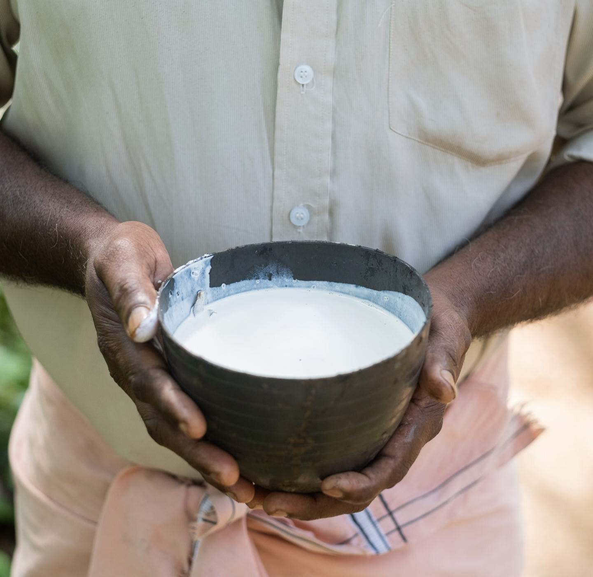

The best mattresses in the world are made with organic, 100% natural
latex rubber. No other material comes close in terms of comfort,
breathability, resiliency, elasticity, motion isolation, durability,
support, and even biodegradability. It makes a superior comfort and
support layer. (We use it for both.) And the most desirable and scarce
latex is GOLS organic certified latex — grown ethically, sustainably,
and responsibly — without persistent pesticides and herbicides, on
USDA's NOP organic-certified family cooperatives, and processed in
organic-certified facilities to stringent standards. Although organic
latex may look the same as natural, blended, or synthetic latex, it’s
not. Organic latex is safe for farmers and their families, better for
you, and better for the planet. Avocado Organic Latex is the only latex
we use.
SUSTAINABLE FORESTRY
Avocado directly manages 4,000 acres of organic latex rubber tree
plantations under programs recognized by the USDA. We adhere to
governing principles and criteria for sustainable use, conservation,
restoration, and respect for all.
HOW WE HARVEST OUR ORGANIC LATEX
IT BEGINS WITH RUBBER TREE TAPPING
Tapping a rubber tree (Hevea Brasiliensis) requires a skilled hand.
Early in the morning, our tappers use a metal gouge with a sharp tip
to make a shallow cut in the outer bark, at a downward angle, winding
ribbon around the tree. This opens the network of continuous latex
vessels that spiral around the tree without harming it. (Fun fact:
Until the rubber trees are mature enough to harvest latex, we grow
pineapple around them.)
MILKY WHITE LATEX, DRIP BY DRIP
At the end of the winding channel, the tapper makes a downward cut and
hangs a small metal cup neatly from the side of the tree. As the milky
white latex begins to flow and drip, it’s collected in the cup. Each
rubber tree provides about 15 grams of latex per day.
OUR FARMERS COLLECT THE LATEX SAP
After four to six hours, the collection cup is filled with latex sap.
The rubber tree can be harvested in this way about two to three times
a week, except during the dry season, for approximately 25 years. No
polluting machines or power tools are needed.

12 ACRES FOR ONE LATEX MATTRESS
To make a queen-size organic latex mattress, it requires the full
output of approximately 2,500 rubber trees spread over 10 to 12 acres.
But instead of harming the environment, the organic farming process
helps it. The same number of trees will, over the course of one year,
remove 143 tons of carbon dioxide from the air. They also provide
habitat for animals and livestock, preserve the health of our forests,
contribute to healthy water, and provide gainful employment for family
farmers where jobs are often scarce.
What Are the Benefits of a Latex Mattress?
Latex mattresses are increasingly popular for their extreme comfort
and durability. They are also associated with eco-friendly practices
and enhanced sleep health. However, not all latex mattresses carry
these benefits….
Latex mattresses are increasingly popular for their extreme comfort and
durability. They are also associated with eco-friendly practices and
enhanced sleep health. However, not all latex mattresses carry these
benefits. So how do you choose the best latex mattress for you, or know
if a latex mattress is right for you at all? In this article, we will
define what a latex mattress is, go over the different types of latex
mattresses, and discuss how they provide a good night’s sleep.
What Is a Latex Mattress?
A latex mattress is constructed from two to four layers of latex foam,
and there are three different types of latex foam: synthetic, blended,
and natural.
Synthetic latex mattresses are primarily crafted from a rubber-mimicking
plastic called styrene-butadiene rubber (SBR). SBR is also used in
artificial turfs, tires, and conveyor belts. Latex mattresses with SBR
are safe and an affordable alternative to natural latex but not nearly
as durable. Additionally, off-gassing chemicals irritating to people
with respiratory issues are prevalent in synthetic latex.
Blended latex mattresses contain less toxic chemicals. These types of
beds are 30 percent natural latex and 70 percent synthetic latex.
Blended mattresses last longer than synthetic latex, but not natural
latex.
Natural latex is more supportive, durable, eco-friendly, and better for
sleep health than synthetic and blended latex. It is harvested and
refined from the milk-like sap of a rubber tree called Hevea
Brasiliensis. This process encourages the healthy growth of rubber trees
as they can be tapped for up to 30 years. Once the sap is harvested, it
is processed into Dunlop or Talalay foam; both are soft, supportive, and
extremely durable. We will discuss the differences between Dunlop and
Talalay later. First, let’s dive deeper into the benefits of a natural
latex bed.
Five Benefits of a Natural Latex Mattress
Natural latex beds are preferable to synthetic and blended latex for
their eco-friendliness, durability, and health benefits.
1. Pain Relieving
The gentle cushioning and buoyant support of latex foam mattresses are
especially beneficial for sleepers with back and joint pain.
Latex foam softly cradles heavy body parts, such as the hips and
shoulders. This light contouring provides pressure relief near the
joints and lower back, while latex’s natural elasticity maintains
natural spinal alignment by gently supporting lighter areas, like the
neck and back.
2. Hypoallergenic and Low Maintenance
If a bed is not continually cleaned, microorganisms, such as bacteria,
fungi, and viruses can easily collect on the top of the mattress and
cause mold, mildew, and dust mites. This results in bedroom allergies
and an unsafe sleeping environment. However, latex is naturally
antimicrobial, meaning it repels harmful microorganisms, making latex an
excellent choice for people with year-round allergies or anyone too
tight on time to sanitize their mattress.
3. Eco-friendly
As mentioned above, natural latex is refined from the sap of the rubber
tree. The trees are not cut down or damaged during this process and can
produce sap for up to 30 years. Therefore, the processing of latex
mattresses encourages tree growth and is extremely sustainable. Natural
latex is also biodegradable, ensuring it won’t sit in a landfill for
years.
4. Breathable
Natural latex foam has an open-cell structure to permit constant
airflow. The foam layers are also constructed with pinholes, enhancing
breathability. Most importantly, chemicals found in synthetic materials
retain body heat and natural latex mattresses contain little to no
additives. If you want an especially cool mattress, opt for a breathable
cover made from cotton or wool.
5. Durable
Natural latex mattresses are best known for their long-term comfort.
High-quality latex mattresses have an average lifespan of 12 to 20
years—significantly longer than other types of mattresses. The
resiliency of natural rubber is often credited for this longevity. A
natural latex mattress effortlessly bounces back once the pressure is
removed, maintaining its original shape over years of use.